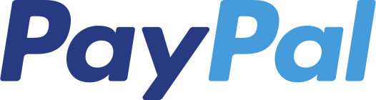
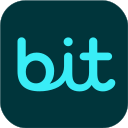

התוסף פותח בעבר על ידי מאור לוי ובהווה מפותח על ידי איתן "67" עמירן, הכל בהתנדבות, ואינו נתמך בשום צורה על ידי הטכניון (שעושה כמיטב יכולתו להפריע, עם כל החלפת האתרים המיותרת). קישור לאתר הנוכחי של התוסף נמצא כאן.
פרטיות
פרטי המשתמש וההגדרות שבשימוש התוסף נשמרים בזיכרון הדפדפן של המשתמש בלבד. נתונים אלו לא נשמרים על ידי התוסף בשרת כלשהו, ואינם מועברים לגורמים חיצוניים. ניתן לקרוא את מדיניות הפרטיות המורחבת כאן.
יצירת קשר עם מפתח התוסף
יש לכם עצה? מצאתם תקלה? סתם רוצים לדבר? לחיצה על הכפתור תפתח חלון לשליחת מייל בהתאם להגדרות התוסף.
צור קשר
תרומה למפתח התוסף 🙂
המפתח המקורי השקיע שעות רבות מזמנו בפיתוח התוסף, אז למרות שהוא נטש את הפרוייקט אני משאיר כאן את הלינק
ל־Paypal שלו, אם תרצו לתרום לו.
אני גם משקיע לא מעט זמן לאחרונה בפיתוח התוסף, ואני מצפה להשקיע בו אפילו עוד,
אז אשמח אם תתרמו גם לי, אם אתם רוצים ויכולים כמובן.
תרומה של כל סכום תתקבל בברכה :)
תרומה למפתח המקורי:
תרום ב-
תרומה למפתח הנוכחי (קישור להעתקה לטלפון
כאן וקוד QR כאן:
תרום ב-